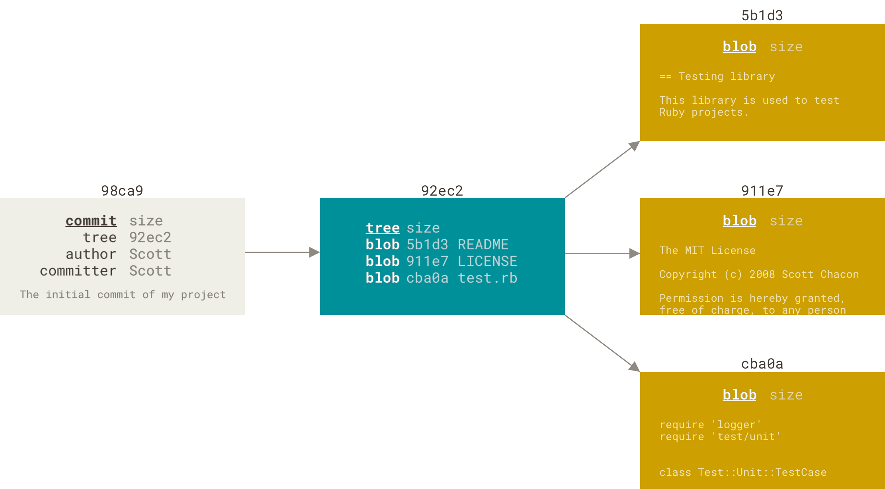
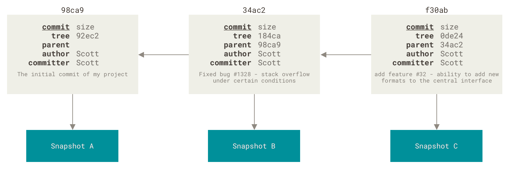
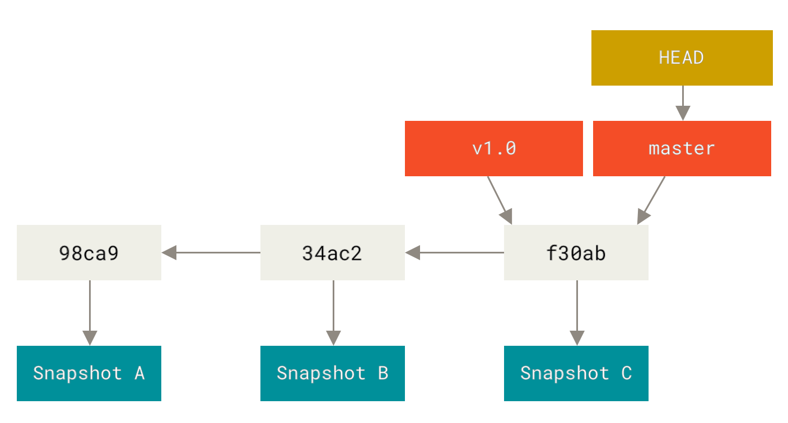
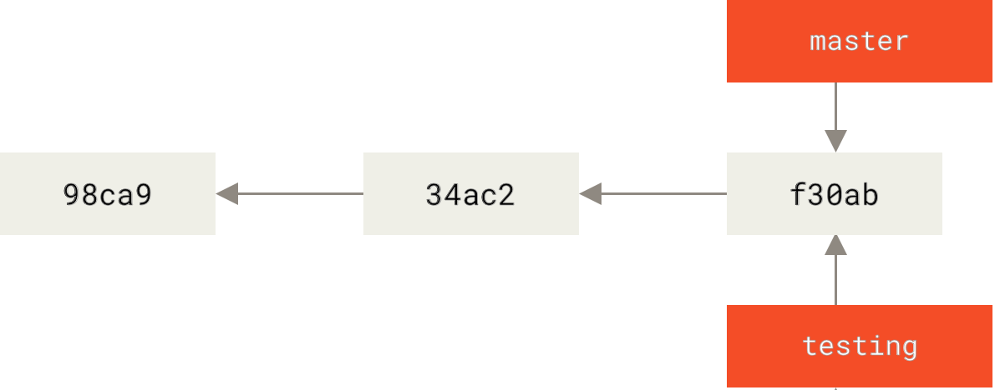
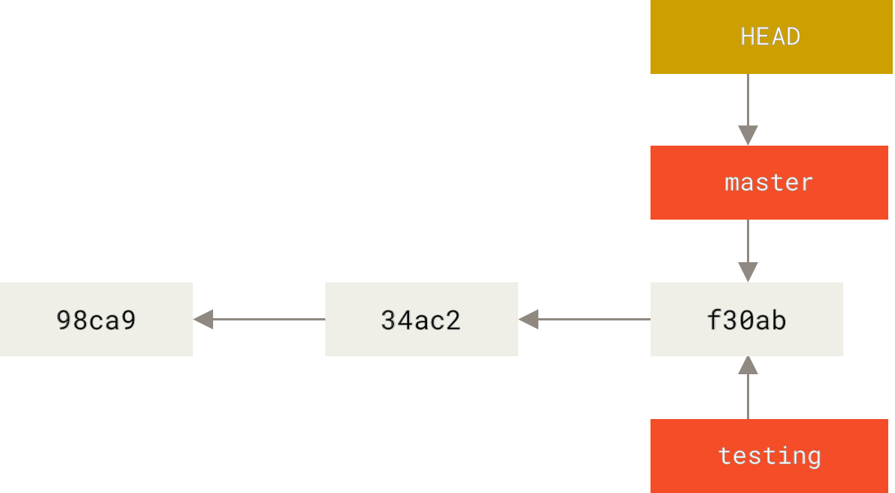
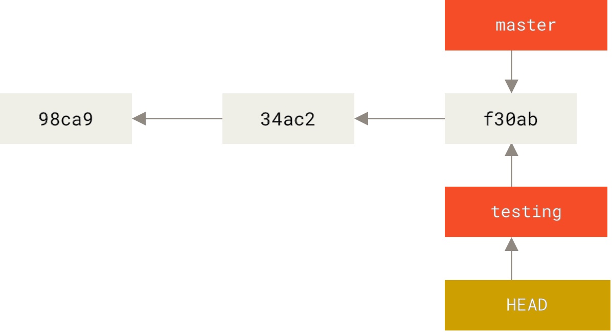
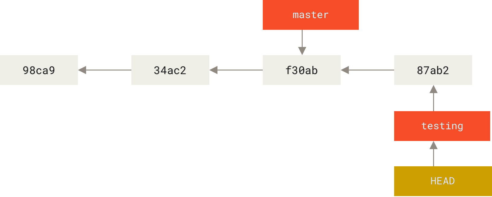
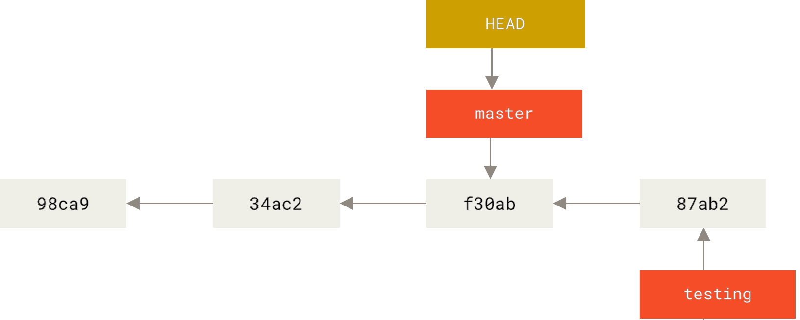
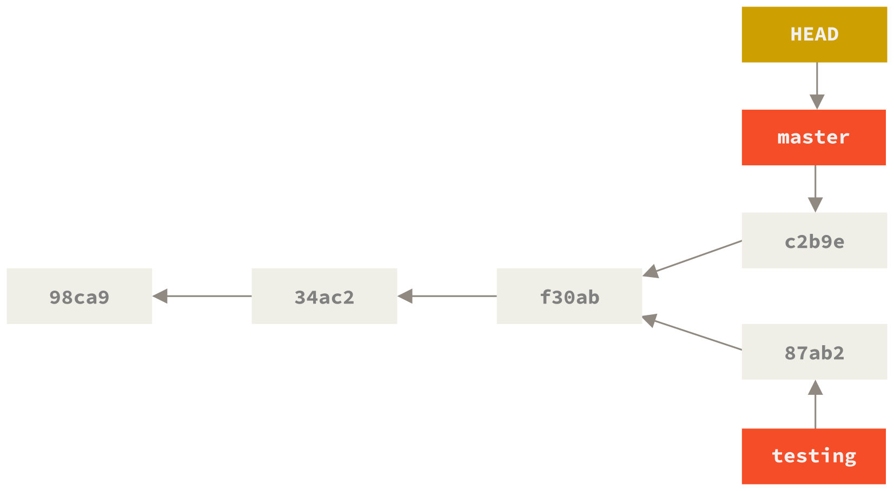

٣، ١، الفروع بإيجاز
لنفهم حقًا طريقة التفريع في جت، علينا أن نتراجع خطوة إلى الخلف ونتدبر طريقته في تخزين البيانات.
كما قد تتذكر من فصل ما هو جت؟، لا يخزن جت بياناته في صورة فروقات، بل في صورة لقطات.
وعندما تُودع، يخزن جت كائنَ إيداع فيه إشارة إلى لقطة المحتوى الذي أهّلته. وفيه كذلك اسم المؤلف وعنوان بريده ورسالة الإيداع والإشارات إلى الإيداعات السابقة له مباشرةً (الإيداعات الآباء): لا أب لأول إيداع، وأب واحد للإيداعات العادية، وأبوين أو أكثر لإيداعات الدمج، وهي الإيداعات الناتجة من دمج فرعين أو أكثر.
حتى نستطيع تصور هذا، لنفترض أن لديك مجلدًا به ثلاثة ملفات، وأنك أهّلتها جميعها ثم أودعتها. يحسب تأهيل الملفات بصمة كل ملف (بصمة SHA-1 التي ذكرناها في فصل ما هو جت؟)، ويخزن نسخة الملف هذه في المستودع (وهي ما يسميها جت «كتلة رقمية» (“blob”)، ونسميها «كتلة» اختصارا)، ويضيف تلك البصمة إلى منطقة التأهيل:
$ git add README test.rb LICENSE
$ git commit -m 'Initial commit'عندما تودع بأمر git commit، فإن جت يحسب أيضا بصمات كل مجلد ومجلد فرعي (في هذه الحالة، مجلد جذر المشروع فقط)، ويخزنها في صورة كائنات أشجار في المستودع.
ثم ينشئ جت كائنَ إيداعٍ فيه بيانات وصفية وإشارة إلى شجرة جذر المشروع، حتى يستطيع إعادة إنشاء تلك اللقطة عند الحاجة.
صار في مستودعك الآن خمسة كائنات: ثلاث كتل (كلٌ منها يمثل محتويات ملف من الثلاثة)، وشجرة واحدة (تسرد محتويات المجلد وما الكتل التي تشير إليها أسماء الملفات)، وإيداع واحد (فيه إشارة إلى شجرة الجذر تلك وكذلك البيانات الوصفية للإيداع).

إذا أجريت تعديلات وأودعتها، فإن إيداعك التالي سيخزن إشارةً إلى الإيداع السابق له مباشرةً.

فإنما الفرع في جت هو إشارة متحركة تشير إلى أحد هذه الإيداعات.
والفرع المبدئي في جت يُسمى master.
فعندما تشرع في صنع الإيداعات، فإن جت يعطيك فرعا رئيسا يسمى master ويشير إلى آخر إيداع صنعته.
ويتقدم فرع master مع كل إيداعٍ تودِعه.
|
فرع |

إنشاء فرع جديد
ماذا يحدث عندما تنشئ فرعًا جديدًا؟
الإجابة: ينشئ جت إشارة جديدة لك لتحركها كما تشاء.
لنقُل إنك أردت إنشاء فرع جديد اسمه testing.
تفعل هذا بأمر الفروع git branch:
$ git branch testingينشئ هذا إشارةً إلى الإيداع الذي تقف عنده الآن.

كيف يعرف جت في أيّ فرع أنت الآن؟
إنه يحتفظ بإشارة مخصوصة تسمى «إشارة الرأس» (HEAD).
لاحظ أن هذه مختلفة كثيرًا عن مفهوم HEAD في الأنظمة الأخرى مثل Subversion و CVS.
في جت، هذه إشارة إلى الفرع المحلي الذي تقف فيه الآن.
في حالتنا هذه، ما زلتَ واقفًا في فرع master.
فما على أمر git branch إلا إنشاء فرع جديد؛ ليس عليه الانتقال إليه.

HEAD تشير إلى فرعيمكنك رؤية هذا بسهولة بأمر السجل، الذي يُظهر لك ما تشير إليه إشارات الفروع،
وذلك بالخيار --decorate («تسميات»، أي إظهار أسماء الإشارات؛ وهو مفترض مبدئيا منذ النسخة 2.13 من جت).
$ git log --oneline --decorate
f30ab (HEAD -> master, testing) Add feature #32 - ability to add new formats to the central interface
34ac2 Fix bug #1328 - stack overflow under certain conditions
98ca9 Initial commitيمكنك رؤية فرعَي master و testing عند إيداع f30ab.
الانتقال بين الفروع
للانتقال إلى فرع موجود، استخدم أمر السحب git checkout.
هيا بنا نتنقل إلى فرعنا الجديد testing:
$ git checkout testingيحرك هذا الأمر إشارة الرأس لتشير إلى فرع testing.

ما دلالة هذا؟ لنصنع إيداعًا آخر إذًا.
$ vim test.rb
$ git commit -a -m 'Make a change'
هذا يدعو للتفكر، لأن الآن فرع testing قد تقدم، بينما قعد فرع master في مكانه مشيرًا إلى الإيداع القديم نفسه عندما انتقلنا إلى الفرع الجديد بأمر السحب.
لنعد إلى فرع master:
$ git checkout master|
لا يُظهر أمر السجل جميع الفروع طوال الوقت
إذا نفذت لم يتبخر الفرع، ولكن جت لا يعلم أنك مهتمٌ به الآن، ولا يُظهر لك جت إلا ما يظن أنك مهتم به. بلفظ آخر، لا يُظهر لك أمر السجل بطبيعته إلا تاريخ الفرع الذي تقف فيه حاليًا. لإظهار تاريخ فرع آخر، عليك طلب ذلك صراحةً، مثل |

فَعَل هذا الأمر فعلين:
أعاد إشارة الرأس لتشير إلى فرع master، وأرجع الملفات في مجلد العمل إلى حالها كما كانت في اللقطة التي يشير إليها master.
هذا يعني أيضا أن التعديلات التي ستصنعها الآن ستُبنى على نسخة قديمة من المشروع.
أي أنه عمليًّا يتراجع عما فعلت في فرع testing لكي تستطيع السير في اتجاه آخر.
|
الانتقال بين الفروع يغيّر الملفات التي في مجلد عملك
مهمٌ ملاحظة أنك عندما تنتقل إلى فرع آخر في جت، فإن الملفات التي في مجلد عملك ستتغير. فإذا انتقلت إلى فرع قديم، سيعود مجلد عملك إلى ما كان عليه عند آخر إيداع في هذا الفرع. وإن لم يستطع جت تغيير الملفات تغييرا نظيفا، فلن يسمح لك بالتبديل أصلا. |
لنُجري بعض التعديلات ونودع مجددًا:
$ vim test.rb
$ git commit -a -m 'Make other changes'الآن افترق تاريخ مشروعك (انظر شكل تاريخ مفترِق).
فلقد أنشأتَ فرعًا وانتقلت إليه وعملت فيه قليلا، ثم عدت إلى الفرع الرئيس وعملت فيه عملا آخر.
كلا هذين التغييرين منعزلان في فرعين منفصلين: يمكنك التنقل بينهما كما تشاء، ودمجهما معًا عندما تكون جاهزًا.
وكل هذا فعلتَه بسهولة بأوامر الفروع branch والسحب checkout والإيداع commit.

يمكنك أيضا رؤية هذا بسهولة بأمر السجل،
فإذا نفّذت git log --oneline --decorate --graph --all فسيُظهر لك تاريخ إيداعاتك ومواضع إشارات فروعك وكيف افترق تاريخك.
$ git log --oneline --decorate --graph --all
* c2b9e (HEAD, master) Make other changes
| * 87ab2 (testing) Make a change
|/
* f30ab Add feature #32 - ability to add new formats to the central interface
* 34ac2 Fix bug #1328 - stack overflow under certain conditions
* 98ca9 Initial commit of my projectولأن الفرع في جت ليس إلا ملفًا مجردًا فيه ٤٠ محرفًا تمثّل بصمة الإيداع الذي يشير إليه الفرع، فإن إنشاء الفروع وإزالتها عمليتان رخيصتان سريعتان. فعملية إنشاء فرع جديد تماثل في سرعتها ويسرها عملية كتابة ٤١ بايتًا إلى ملف (٤٠ محرفًا للبصمة ثم محرف نهاية السطر).
هذا اختلاف عظيم عن طريقة التفريع في معظم الأنظمة القديمة لإدارة النسخ، التي تُنسخ فيها جميع ملفات المشروع إلى مجلد آخر. قد يحتاج هذا عدة ثوانٍ أو حتى دقائق، حسب حجم المشروع. ولكن تلك العملية في جت دائمًا عملية آنيّة. وأيضا لأننا نسجّل آباء الإيداعات عندما نودع، فإن إيجاد قاعدة مناسبة للدمج هي عملية يفعلها جت من أجلنا آليًّا، وهي سهلة جدا عموما. تشجّع هذه الميزات المطورين على إنشاء فروع واستعمالها بكثرة.
لنرَ لماذا عليك فعل هذا.
|
إنشاء فرع جديد والانتقال إليه في خطوة واحدة
من المعتاد أن ترغب في الانتقال إلى فرع جديد فور إنشائه؛ يمكنك إنشاء فرع والانتقال إليه بأمر واحد: |
|
بَدءًا من النسخة 2.23 من جت يمكنك استعمال أمر التبديل بدلًا من أمر السحب من أجل:
|